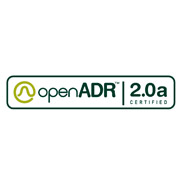
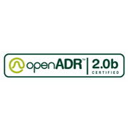
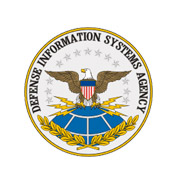
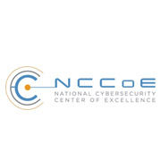

다양한 분산자원과의 유연한 연계를 통해 비즈니스 모델/전략에 따른 복수의 가상 발전소 (VPP) 구성 및 안정적인 운영/관리가 가능할 뿐만 아니라, 최적의 결과를 도출할 수 있도록 다양한 기술들을 지원합니다.




국내 최초 OpenADR 프로토콜 인증 획득 및 수요자원운영관리 시스템을 시작으로 다년 간 글로벌 에너지 시장에서의 경험을 통해 Load, PV, ESS, CHP 등과 같은 다양한 분산 자원들과의 프로토콜 연동 기술 뿐만 아니라 AI 기반의 ESS 배터리 이상감지 및 자원 최적포트폴리오, 실시간 데이터 처리를 위한 시계열 데이터 처리 기술, 클로킹 사이버 보안 기술, Client Box를 통한 프로토콜 컨버팅 기능 등을 지원하고 있습니다.
EIP를 통해 에너지 자원 운영 최적화 기반으로 에너지 시장에서의 효율적이고 안정적인 비즈니스의 확장을 기대하실 수 있습니다.